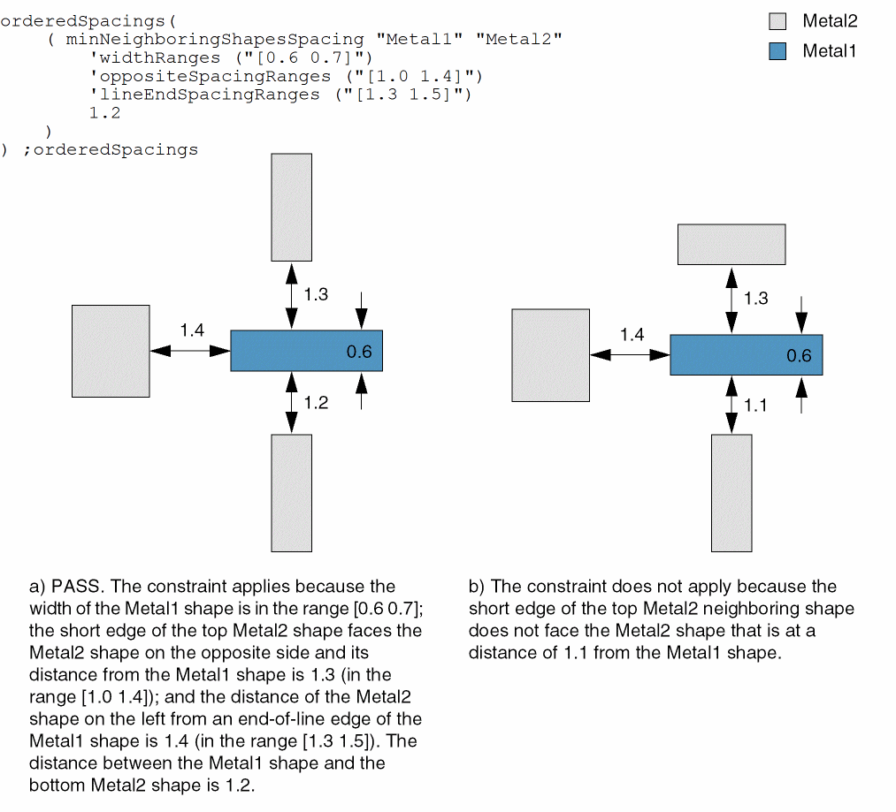
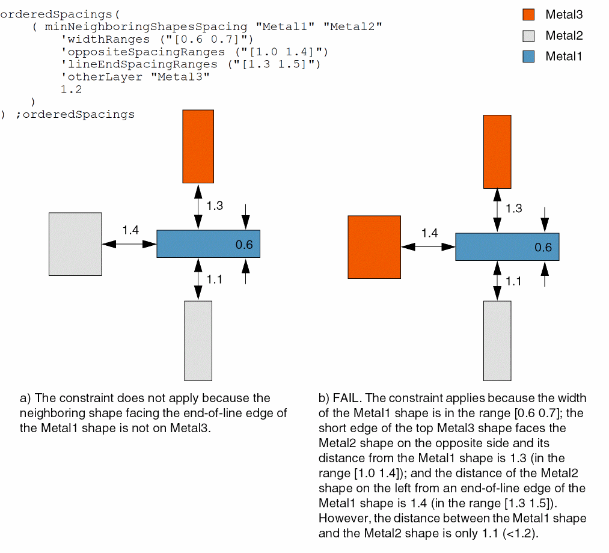

minNeighboringShapesSpacing
orderedSpacings( ( minNeighboringShapesSpacingtx_layer1 tx_layer2'widthRanges (g_widthRanges) 'oppositeSpacingRanges(g_oppSpacingRanges) 'lineEndSpacingRanges (g_lineEndSpacingRanges) ['otherLayertx_otherLayer]f_spacing)
) ;orderedSpacings
(Virtuoso Advanced Node for Layout Standard) Specifies the minimum spacing between a shape on layer1 with width within the specified width ranges and a shape on layer2 if there exist two neighboring layer2 shapes:
- One with its short edge facing the layer2 shape to which the spacing is being measured, at a distance in the range oppSpacingRanges from the layer1 shape. The two layer2 shapes must be on opposite sides of the layer1 shape.
- The other facing an end-of-line edge of the layer1 shape, at a distance in the range lineEndSpacingRanges from the layer1 shape.
Optionally, the neighboring shapes can be on a third layer, otherLayer.
Values
Parameters
|
The constraint applies only if the width of the layer1 shape falls in these width ranges.
Type: Floating-point values specifying width |
|
|
The constraint applies only if there exists a neighboring layer2 shape, with its short edge facing the layer2 shape to which the spacing is being measured, at a distance in this range from the layer1 shape. The two layer2 shapes must be on opposite sides of the layer1 shape.
Type: Floating-point values specifying spacing |
|
|
The constraint applies only if there exists a layer2 shape, facing an end-of-line edge of the layer1 shape, at a distance in this range from the layer1 shape.
Type: Floating-point values specifying spacing |
|
|
The neighboring shapes must be present on this layer. Otherwise, neighboring shapes must be present on layer2. |
|
Examples
- Example 1: minNeighboringShapesSpacing with widthRanges, oppositeSpacingRanges, and lineEndSpacingRanges
- Example 2: minNeighboringShapesSpacing with widthRanges, oppositeSpacingRanges, lineEndSpacingRanges, and otherLayer
Example 1: minNeighboringShapesSpacing with widthRanges, oppositeSpacingRanges, and lineEndSpacingRanges
The spacing between a Metal1 shape and a Metal2 shape must be at least 1.2 if the following conditions are met:
- There exists a neighboring Metal2 shape, with its short edge facing the Metal2 shape to which the spacing is being measured, at a distance greater than or equal to 1.0 and less than or equal to 1.4 from the Metal1 shape.
-
There exists a Metal2 shape facing an end-of-line edge of the Metal1 shape at a distance greater than or equal to 1.3 and less than or equal to 1.5 from the Metal1 shape.

Example 2: minNeighboringShapesSpacing with widthRanges, oppositeSpacingRanges, lineEndSpacingRanges, and otherLayer
The spacing between a Metal1 shape and a Metal2 shape must be at least 1.2 if the following conditions are met:
- There exists a neighboring Metal3 shape, with its short edge facing the Metal2 shape to which the spacing is being measured, at a distance greater than or equal to 1.0 and less than or equal to 1.4 from the Metal1 shape.
-
There exists a Metal3 shape facing an end-of-line edge of the Metal1 shape at a distance greater than or equal to 1.3 and less than or equal to 1.5 from the Metal1 shape.

Return to top